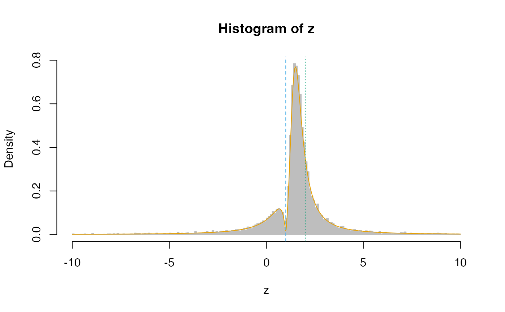

Density, probability, quantile, and random generation from the posterior distribution of the location parameter when one has \(n = 1\) observation and uses a particular prior that results in valid confidence intervals (asymptotically in the confidence level).
Usage
nun1post(fam = c("normal", "cauchy"), ddist = NULL, ...)
dn1post(
x,
A,
obs,
nu = NULL,
fam = c("normal", "cauchy"),
ddist = NULL,
log = FALSE,
...
)
pn1post(
q,
A,
obs,
nu = NULL,
fam = c("normal", "cauchy"),
pdist = NULL,
lower.tail = TRUE,
log.p = FALSE,
...
)
qn1post(
p,
A,
obs,
nu = NULL,
fam = c("normal", "cauchy"),
qdist = NULL,
pdist = NULL,
...
)
rn1post(n, A, obs, nu = NULL, fam = c("normal", "cauchy"), rdist = NULL, ...)Arguments
- fam
One of
"normal"or"cauchy". Ifddist,pdist,qdist, orrdistare specified then this argument is ignored.- ddist
Density function of standard distribution \(\rho()\). Should have a
logargument.- ...
Additional arguments for
ddist,pdist,qdist, andrdist.- x, q
vector of quantiles
- A
The prior value.
- obs
The observed value. This is \(X\) in the description.
- nu
The prior value of nu. If not known, use
nun1post()- log, log.p
logical; if
TRUE, probabilities p are given as log(p).- pdist
Cumulative distribution function of standard distribution.
- lower.tail
logical; if
TRUE(default), probabilities are P(X<=x) otherwise, P(X>x).- p
vector of probabilities
- qdist
Quantile function of standard distribution.
- n
sample size
- rdist
Random generation of standard distribution.
Details
Let \(X\) have PDF \(\frac{1}{\sigma}\rho((x - \mu)/\sigma)\) for a known and symmetric \(\rho(\cdot)\). Let \(\nu = |\mu - A| / \sigma\) for a pre-specified \(A\). We place prior \(\pi(\mu) = |\mu - A|^{-1}\) and \(\nu = \text{argmax}_{a > 0}a\rho(a)\) with probability 1.
These functions will calculate the posterior distribution and allow you to interact with it through the distribution, density, quantile, and random generation functions.
Functions
nun1post(): Obtains prior value of \(\nu\).dn1post(): Density function.pn1post(): Distribution function.qn1post(): Quantile function.rn1post(): Random generation.
Examples
set.seed(1)
# Observe x = 2, assume t with 2 df, prior value is A = 1
nun1post(ddist = dt, df = 2) ## nu should be 1
#> [1] 1
x <- seq(-10, 10, length.out = 500)
y <- dn1post(x = x, A = 1, obs = 2, nu = 1, ddist = dt, df = 2)
z <- rn1post(n = 10000, A = 1, obs = 2, nu = 1, rdist = rt, df = 2)
z <- z[z >= -10 & z <= 10]
graphics::hist(z, freq = FALSE, breaks = 200, border = "grey", col = "grey")
graphics::lines(x, y, type = "l", col = "#E69F00")
graphics::abline(v = c(1, 2), col = c("#56B4E9", "#009E73"), lty = c(2, 3))

pn1post(q = 2, A = 1, obs = 2, nu = 1, pdist = pt, df = 2)
#> [1] 0.7113249
qn1post(p = 0.7113, A = 1, obs = 2, nu = 1, qdist = qt, pdist = pt, df = 2)
#> [1] 1.99993